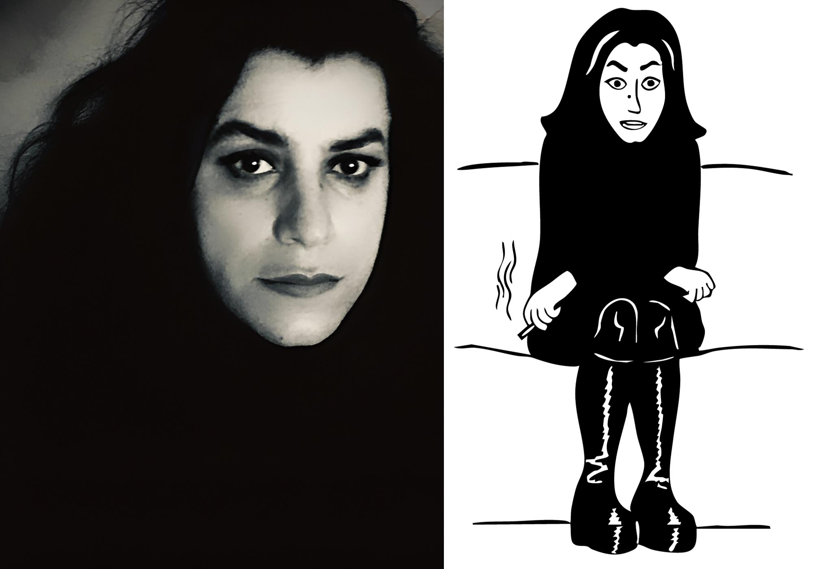

A Propos
Marjane Satrapi
Marjane Satrapi est une artiste, autrice et réalisatrice
franco-iranienne
surtout connue pour sa bande dessinée
Persepolis, publiée en 2000.
À travers son œuvre, elle
raconte son enfance
et son adolescence en Iran pendant et
après la Révolution islamique,
puis son exil en Europe. Son
style graphique en noir et blanc,
simple mais expressif,
s’inspire des traditions
du dessin persan tout en restant
très moderne et accessible.
Satrapi aborde avec sincérité
des thèmes forts comme la liberté,
l’identité, la guerre, la
famille et la condition des femmes.
Son travail mêle humour,
émotion et critique politique,
faisant d’elle une voix
importante de la mémoire collective iranienne
et une figure majeure de l’art engagé contemporain.